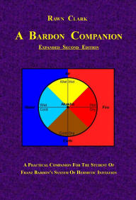

Purchase Books by Rawn Clark
 Now Available!
Now Available!Healing, Magic and
Self-Knowledge
Original Articles & Audio Transcripts
♦ THE CENTER OF STILLNESS MEDITATION ♦
♦ THE SELF-HEALING ARCHAEOUS ♦
♦ THE MAGIC OF IHVH-ADNI ♦
♦ KNOW THYSELF ♦
240 page Paperback
$18.00 at
Amazon.com
There are four aspects that link each of
these pieces together. First is that each was born when I was
living a solitary, rustic life in the countryside of Northern
California and in some way reflects the inspiration of my
natural surroundings. Second is that each is an original
creation — neither repetition of another’s work nor commentary
upon another’s work — simply my own work, drawn from within my
own Self. Third is that the intent of each piece is the
empowerment of the reader, the setting out of technique capable
of enabling and liberating the reader’s own direct personal
experience. And fourth is the fact that I recorded audio
versions of each piece.
I guess a fifth connection must
be admitted as well — until the publication of this book, each
existed only in digital format online, on CD and on personal
computers. And while that’s lovely and makes them widely and
freely available to those with access to computers and audio
players, it is also a bit foolish — what happens when the
electricity goes out??? What happens when the internet crashes
and all those bits of data go poof??? So, this then is my bid
for an existence beyond the inevitable cyber-collapse for my
creations!
 Now Available!
Now Available!& The 32 Paths of Wisdom Tarot
230 page
Full Color paperback
$37.00 at
Amazon.com
This present edition in paperback differs quite a bit from
the 2005 digital edition. First of all, my understanding of the
Tree of Life has deepened considerably since 2002 when I wrote
the original "32 Paths of Wisdom", especially my understanding
of how and why the planets are attributed to the Hebrew Letters.
As a result, some of the planetary attributions have been
corrected in this version. Secondly, I have removed 99% of the
Hebrew words and substituted their English equivalents in an
effort to make the Tree symbol much more accessible. Thirdly, I
have re-presented the 231 Gates in full color instead of their
former grayscale, rendering them much more evocative of their
essential meaning. And fourth, I have eliminated the endless
repetition of the Tarot images found throughout the original
presentation of the 231 Gates, and have instead presented them
just once in larger size (front and back of each “card” image)
at the end of the book. This is the first full presentation of
the revised 32 Paths of Wisdom Tarot and they are of a size
comfortable for use in meditation and working the Gates.
By way of introduction, I begin with a brief overview of the
structure of the Hebrew Tree, plus a bit about the structure of
the Gates and close with a few pages describing the techniques
for working the Gates.
This is followed by my (revised)
article, “The 32 Paths of Wisdom” which describes each of the 32
standard components of the Hebrew Tree of Life (the 10 Sephirot
or Numbers and the 22 Lettered “paths” that connect them). Next
comes a very brief overview of the 16 un-Lettered “Hidden Paths”
that flesh out the Hebrew Tree and enable the 231 Gates.
The major portion and heart of this book is taken up by a
concise delineation of the 231 Gates of the Hebrew Tree
presented in an ascending or initiatory sequence — the 231 Gates
of Initiation. At the end of the Gates you will find an index of
Gates sorted by Sephirot, planet, sign, etc., which has proven
to be a very handy reference.
And, at the very, very end
of this book you will find the (revised) 32 Paths of Wisdom
Tarot, front and back of each “card” presented in full color.
Meditation Project
Tenth Anniversary Edition
128 page
Full Color paperback
$26.50 at
Amazon.com
I find it hard to believe that it’s been 14 years since I
created the Eight Temples Meditation Project! It feels like just
yesterday and at least two lifetimes ago, all at the same time .
. .
Fourteen years ago (1997-98) was a time in my life
when I was working extensively with the Western Hermetic Tree of
Life, just before my attention was turned to the Hebrew Tree and
the Gra Tree. The Eight Temples (or “8T” as it’s affectionately
called) represents the full flowering of my time with the
Western Hermetic Tree and even though over time I have forsaken
the Western Tree for the Gra Tree, I still see the 8T as a
valuable introduction to all versions of the Tree of Life.
The point of the 8T is that the Tree of Life is a living
experience, not just an academic, intellectual pursuit. It’s
value is lasting because it is an experiential
introduction to the Sephirot. And no matter how you arrange the
Sephirot or label the connections between them, these eight
meditation rituals will still provide a practical introduction
to the basic Sephirotic concepts and kabbalistic cosmology
inherent to all versions of the Tree.
I dedicate this
edition to all who make the journey to the Malkuth Temple. I
greet each and every one of you personally with a smile and a
nod in that endless present-moment spent within that
ever-so-familiar space of infinite possibilities . . .
 Now Available!
Now Available!The 182 Gates of the Gra Tree of Life
182 page
Full Color paperback
$34.00 at
Amazon.com
Over a decade in the making and refining, here, finally in concrete form, is what I feel to be my Magnum Opus, my most important work...
The ancient Kabbalists wrote of “permuting the Letters”, a
process of combining pairs of Hebrew Letters with vowel sounds
and uttering them to generate mystical and magical effects.
Franz Bardon, in his book The Key to the True Quabbalah, wrote
of combining the utterance of letter sounds with the creative
imagination of color and feeling, also to generate mystical and
magical effects.
In this book, I describe a different
approach — permuting the Tree itself. This also combines the
Letters but instead of speaking the Letters, the practitioner
becomes the Letters and thus “utters” them with their whole
being.
The traditional techniques of permuting the
Letters require decades of study as a prerequisite and in Judaic
Kabbalah they are the sole purview of men. On the other hand,
the technique of Permuting the Tree that I present here is
non-exclusive and does not require any foreknowledge of
Kabbalistic terminology, philosophy, etc. The only thing
required is your creative imagination.
I present to you
in these colorful pages the Tree of Life stripped of all its jargon and
transformed into a truly useable tool, a map of the structure of
Being that will easily lead you along a journey into Self.
The message of the Tree of Life is that there is One Self
and every thing that exists is an aspect of The One Self.
Furthermore, the One Self exists equally within each of the
infinite number of things that exist. It says that every thing
is directly connected through the immanence of the One Self. It
says that each thing can find the infinite by merely looking
within its own self. And, it says that there is no need for an
intermediary, no need to rely upon what someone else sees . . .
Now Available!
A Bardon CompanionExpanded Second Edition
At last! The new Expanded Second Edition of A Bardon Companion is in print!
This second edition contains an entirely new in-depth commentary upon Initiation Into Hermetics and a large collection of excerpts from my public and private correspondence. I've also reproduced the complete text of the original 2002 first edition and have supplied a full index. In total, the expanded second edition of 2010 is 520 pages in length -- over twice the material presented in the first edition! It is a hefty book, weighing in at 2 lbs and with a size of 6"x9"x1.2"! LOL
Since my usual publisher was unable to afford such an expensive print run, I have opted to publish this second edition myself, using an internet based on-demand publisher (CreateSpace.com) and selling the paperback version through Amazon.com. And now, due to persistent demand, I am offering the new Second Edition in digital eBook format below.
Purchase the
Paperback edition at
Amazon.com
(520 pages
$28.75)
Or purchase one of the eBook editions here: